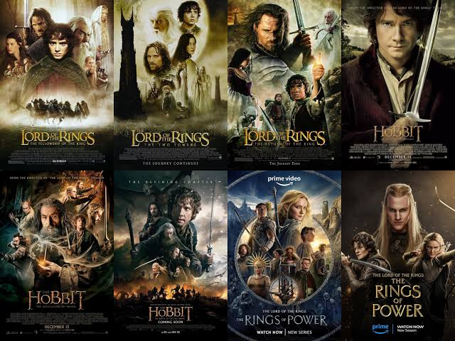

Senhor Dos aneis



Senhor Dos Aneis
A trilogia épica O Senhor dos Anéis (escrita por J.R.R. Tolkien e adaptada para o cinema por Peter Jackson) narra a luta dos povos livres da Terra-média contra o retorno do Senhor do Escuro, Sauron.
O Senhor dos Anéis A sociedade do Anel
O trailer oficial e teaser de O Senhor dos Anéis: A Sociedade do Anel (2001), dirigido por Peter Jackson, apresenta a grandiosa jornada na Terra-Média e o perigo iminente do retorno de Sauron.